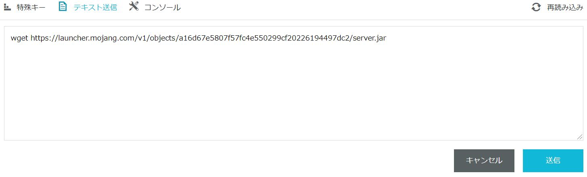
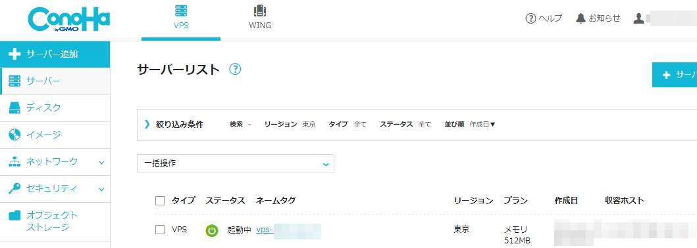
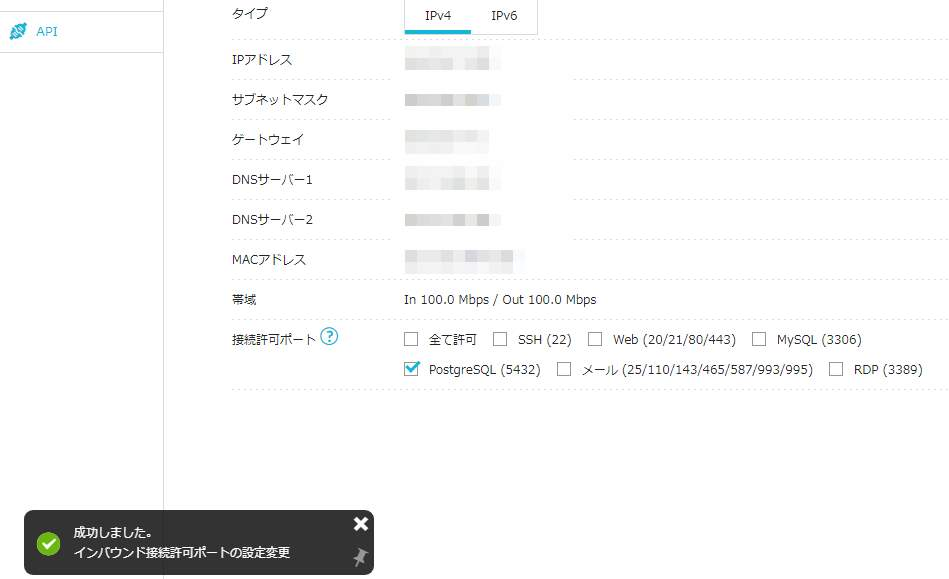
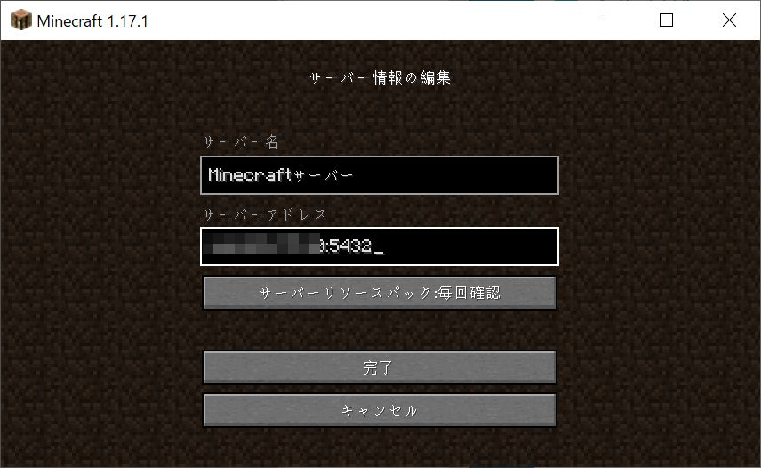
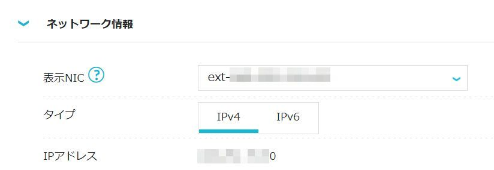
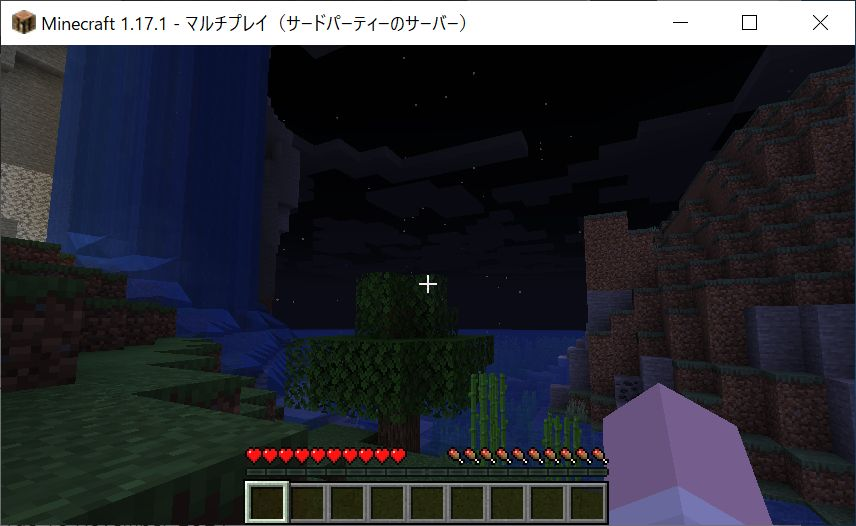
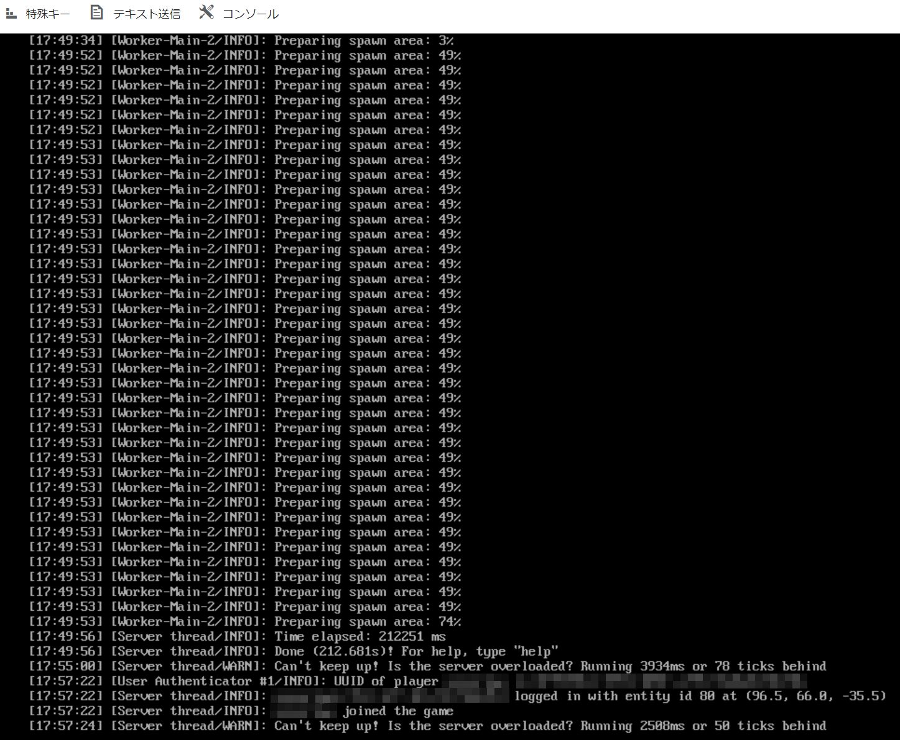

みんな大好きマインクラフト。サーバを建てるにもCentOSを選ぶとサポートが切れるまで短い今、代替となるMIRACLE LINUXを使ってマインクラフトサーバをインストールしてみよう。とりあえず動かす方法です。細かい設定などはまた別の機会に。
**前提としてConoHaにMIRACLE LINUX 8.4を導入の記事の作業が終わっている事を想定していますが、記事の説明通りだとサーバのスペックが低いので快適にプレイできないと思います。お金に余裕があればCPUやメモリが強いプランを選ぶと良いでしょう。ConoHaにMIRACLE LINUX 8.4を導入する方法は こちら **
必要な事
- サーバのダウンロード
- JAVAのインストール
- サーバの初期設定
- ファイヤウォールの設定
- ConoHaの接続許可ポートの設定
マインクラフトサーバの本体をダウンロード
ConoHaのコンソールを開き、一般ユーザでログインします。まずはマインクラフトサーバを置くディレクトリを作成します。そして作業ディレクトリを作成したディレクトリに変更します。
$ mkdir minecraft-server
$ cd minecraft-server
コンソールが[ユーザ名@ホスト名 minecraft-server ]$ となっていると思います。
次にコンソールにコマンドを打ちMinecraftをダウンロードします。
wget https://launcher.mojang.com/v1/objects/a16d67e5807f57fc4e550299cf20226194497dc2/server.jar
と言ってもURLが長いので、上のコマンドをコピーしてコンソール上部のテキスト送信をクリックして貼り付け、送信ボタンをクリックします。

そしてEnterキーを押して実行します。
~~略~~ 'server.jar' saved [43626592/43626592]
ダウンロードが完了したので、実行用のスクリプトを作成します。
echo -e '#!'"/usr/bin/bash\njava -Xmx1024M -Xms1024M -jar server.jar nogui" > start.sh
NOTE: 今回のメモではサーバに512MBのメモリ(RAM)しかありませんが、Swapというメモリが足りなかった場合に使える領域が2GB程度存在します。メモリに比べて速度がとても遅いのでメモリの代わりにはなりませんが、サーバの動作というだけなら起動は可能です。また、-Xmx1024Mと-Xms1024Mはそれぞれ指定できる最低値です。これ以下の値を指定しても、自動的に1024Mが指定されたものとして起動してしまいます。
先ほどと同じく、上のコマンドをコピーしてコンソール上部のテキスト送信をクリックして貼り付け、送信ボタンをクリックし、Enterキーを押します。
start.shファイルが作成されていると思います。
$ ls
server.jar start.sh
実行権限を付与しましょう。
$ chmod +x start.sh
JAVAの実行環境をインストール
次に、サーバを実行するためのJAVAのインストールを行います。ここでsudoコマンドの登場です。パスワードを聞かれるので、ログインしたユーザのパスワードを入力します。java以外にも必要なパッケージが自動でインストールされます。
$ sudo dnf -y install java-latest-openjdk-headless
[sudo] password for XXXX:
NOTE: JAVAのバージョンは複数ありますが、Minecraft1.17以降はJAVAのバージョン16以降が必要なようです。MLではjava-latest-openjdkほにゃららがバージョン16になります。因みにjava-11-openjdkほにゃららだとバージョン11がインストールされます。
サーバの初期設定
とりあえず一度起動しましょう。
$ ./start.sh
[00:00:00] [main/ERROR]: Failed to load properties from file: server.properties
[00:00:00] [main/WARN]: Failed to load eula.txt
[00:00:00] [main/INFO]: You need to agree to the EULA in order to run the server. Go to eula.txt for more info.
何やらメッセージが表示されます。それぞれの行で、server.propertiesファイルが見当たらない、eula.txtがロードできない、EULAに同意しないといけないとなっています。
一旦今のファイル一覧を見てみましょう。
$ ls
eula.txt logs server.jar server.properties start.sh
ファイルが増えています。
EULAに同意するため下記のコマンドを実行します。
$ sed -i 's/false/true/g' eula.txt
サーバのポートがデフォルトだとtcpの25565番ですが、ConoHaの接続許可ポートを指定するにはAPI操作等が必要になってきます。ですので、簡単に選べる代表的なポートを拝借して5432番ポートを利用するように設定変更します。5432番は元々PostgreSQL用ですが、マインクラフトサーバを立てるにあたり同じサーバでPostgreSQLを動かす事はほとんどないと思うので影響は無いと考えていいと思います。
$ sed -i 's/25565/5432/g' server.properties
確認は下記のコマンドで可能です。
$ grep 5432 server.properties
server-port=5432
query.port=5432
サーバの起動
サーバを起動しましょう。いろいろ文字が表示されます。メモリ512MBでは非常に苦しく時間がかかるので、しばし待ちましょう。今回は起動に210秒かかりました。
$ ./start.sh
~~略~~
[00:00:00] [Server thread/INFO]: Done (210.643.s)! For help, type "help"
[00:00:00] [Server thread/WARN]: Can't keep up! Is the server overloaded? Running 2885ms or 57 ticks behind
無事に起動しましたが、すでにサーバがオーバーロード（つまりあっぷあっぷして苦しい）していないか？と警告が出ています。メモリ512MBでは厳しいようです。今回はこのまま進めます。
ここまででサーバが立ち上がりました。早速接続を・・・と考えたくなりますが、実はポートが開いていないので接続できません。ポートを開ける為に2種類の設定を行わなければなりません。
一旦Ctrl+cボタンを押して、サーバを終了させましょう。
^C[00:00:00] [Server thread/INFO]: Stopping server
と表示され、サーバが終了してコンソール画面に戻ってくると思います。
ファイヤウォールの設定
1種類目はMLのファイヤウォール設定です。現在のファイヤウォールの設定を確認します。
$ sudo firewall-cmd --list-all
[sudo] password for XXXX:
public (active)
target: default
icmp-block-inversion: no
interfaces: eth0
sources:
services: cockpit dhcpv6-client ssh
ports:
protocols:
masquerade: no
forward-ports:
source-ports:
icmp-blocks:
rich rules:
現在有効な設定が表示されます。現在はservicesの行にあるサービスしか外部から通信できません。今回はserviceとしてではなく、portとして、tcpの5432を追加し、もう一度確認しましょう。
$ sudo firewall-cmd --add-port=5432/tcp
success
$ sudo firewall-cmd --list-all
public (active)
target: default
icmp-block-inversion: no
interfaces: eth0
sources:
services: cockpit dhcpv6-client ssh
ports: 5432/tcp
protocols:
masquerade: no
forward-ports:
source-ports:
icmp-blocks:
rich rules:
ports行に追加されているのが確認できます。この設定は再起動すると消えてしまうので、恒久的に適用するために下記のコマンドを実行しましょう。
$ sudo firewall-cmd --runtime-to-permanent
success
successと表示がされればOKです。
ConoHaの接続許可ポートの設定
2種類目はVPSの接続許可ポートの設定です。
ConoHaのWebからサーバーリストを参照し、ネームタグの列の作成したサーバをクリックします。

画面下部の接続許可ポートのうち、PostgreSQL (5432)にチェックを入れて数秒待つと画面左下に成功しました。と表示されます。

以上で設定は完了です。
ゲームの起動と接続
マインクラフト(バージョン 1.17.1)を起動し、マルチプレイからサーバーを追加をクリックします。サーバー名はわかりやすい値で好きなように設定し、サーバーアドレスにはConoHaのIPv4のIPアドレス:5432を入力し、完了をクリックします。


NOTE: IPアドレスとポート番号の5432の間はコロンという記号で、:です。日本語のキーボードを使っている場合はけの位置です。
追加されたサーバーを選び、サーバーに接続をクリックするとゲームを開始できます。

コンソール画面を見ると、ログインしたことがわかるログが表示されています。

以上で完了です。